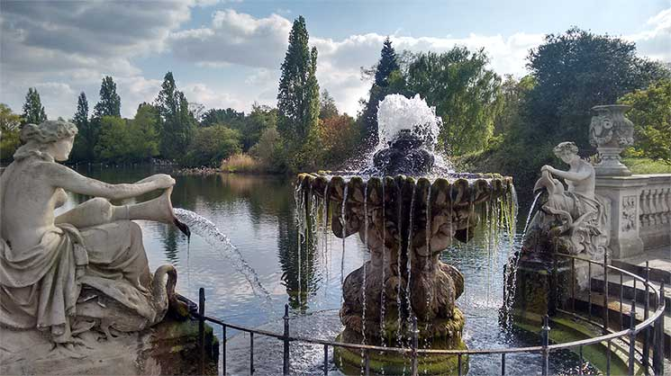

Unul dintre cele mai importante obiective turistice si istorice ale Londrei, Hyde Park acopera o suprafata de 142 de hectare. In Hyde Park exista cate ceva pentru fiecare turist sau londonez. Cu peste 4000 de copaci, un lac, o pajiste, facilitati de echitatie si multe altele este foarte usor sa uiti ca te afli in mijlocul unui oras atat de agitat pecum Londra.
Atunci cand Regele Henric al VIII-lea si ceilalti oameni de la curtea sa isi manau caii in Hyde Park in anul 1536, in urmarirea unei caprioare sau a unui porc mistret, ar fi fost foarte greu de imaginat ca ani mai tarziu nobila arta a tai chi-ului va fi practicata in mod pajnic printre copaci, in fiecare dimineata, sau ca regretatul tenor Pavarotti se va auzi precum un ecou in intreg parcul, aplaudat fiind de mase de oameni in delir.
In Hyde Park exista restaurante si cafenele care ofera o gama foarte variata de produse de la inghetate si sandwich-uri pana la mese sofisticate din trei feluri. Un fost post de observare al politiei numit "The Lookout" este astazi folosit ca centru educational pentru copiii care invata despre natura si animale salbatice.
Hyde Park este deschis de la 5:00am pana la miezul noptii, pe parcursul intregului an. Locurile de parcare din zona sunt extrem de limitate, de aceea este recomandat ca vizitatorii parcului sa foloseasca mijloacele de transport in comun.